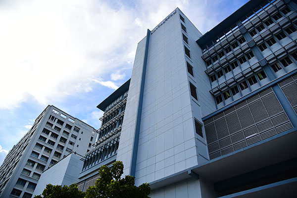
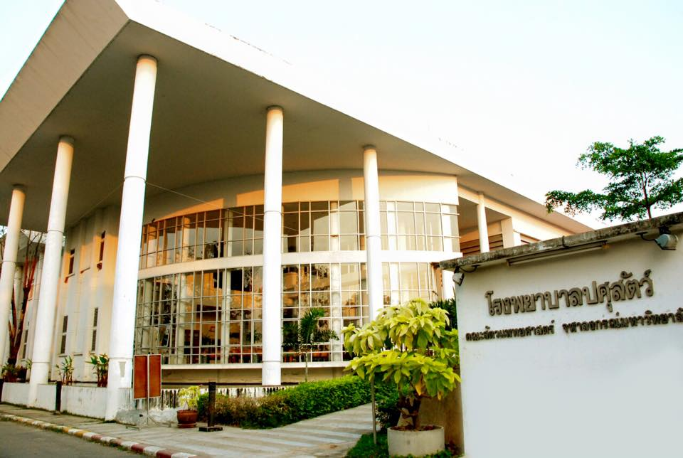

80 ปี สัตวแพทยศาสตร์ จุฬาฯ สร้างสรรค์การศึกษา พัฒนาคุณธรรม ก้าวล้ำงานวิจัย รับใช้สังคม
โรงพยาบาลสัตว์ของเรา มีอยู่ 2 แห่ง และ 1 ศูนย์การเรียนรู้ คือ
- โรงพยาบาลสัตว์เล็ก ตั้งอยู่ที่ 39 ถนนอังรีดูนังต์ เขตปทุมวัน กรุงเทพมหานคร 10330 โทร. 0-2218-9750-1

- โรงพยาบาลปศุสัตว์ และศูนย์ฝึกนิสิต ตั้งอยู่ที่ 57 หมู่ที่ 1 ถนนทหารบก ตำบลบ่อพลับ เมืองนครปฐม 73000 โทร. 034270968-70

- ศูนย์เครือข่ายการเรียนรู้เพื่อภูมิภาค จังหวัดสระบุรี
ระบบ Admission (รับ 70 คน)
- GAT (รหัส85) ค่าน้ำหนัก 20%
- PAT2 (รหัส72) ค่าน้ำหนัก 30%
โครงการจุฬาฯ – ชนบท (รับ 10 คน)
เปิดโอกาสให้แก่นักเรียนในต่างจังหวัดที่อยู่ในเขตพื้นที่ที่ทางศูนย์จุฬาฯ-ชนบทได้กำหนดขึ้น
- GAT (รหัส85) ค่าน้ำหนัก 40% (เกณฑ์ขั้นต่ำ 25%)
- PAT2 (รหัส72) ค่าน้ำหนัก 60% (เกณฑ์ขั้นต่ำ 25%)
- ข้อมูลเพิ่มเติม : www.chula.rural.ac.th
ระบบรับตรงแบบปกติ (รับ 30 คน)
โดยเปิดรับสมัคร วันที่ 4 – 11 มีนาคม 2559
- ผู้ที่กำลังศึกษาชั้นมัธยมศึกษาปีที่ 6 ต้องมีผลการเรียนเฉลี่ยสะสม(GPAX) ในชั้นมัธยมศึกษาปีที่ 4 – 6 (ภาคต้น) รวม 5 ภาคการศึกษา ไม่ต่ำกว่า 3.00
- ผู้สำเร็จการศึกษาชั้นมัธยมศึกษาปีที่ 6 ต้องมีผลการเรียนเฉลี่ยสะสม(GPAX) ในชั้นมัธยมศึกษาปีที่ 4 - 6 รวม 6 ภาคการศึกษา ไม่ต่ำกว่า 3.00
เกณฑ์การพิจารณา
- GAT (รหัส85) ค่าน้ำหนัก 25%
- PAT1 (รหัส71) ค่าน้ำหนัก 25% (เกณฑ์ขั้นต่ำ 30%)
- PAT2 (รหัส72) ค่าน้ำหนัก 30% (เกณฑ์ขั้นต่ำ 30%)
- วิชาสามัญ : วิชาชีววิทยา ค่าน้ำหนัก 20%
ข้อมูลเพิ่มเติม : http://www.atc.chula.ac.th
“ในด้านอาหาร เนื้อสัตว์จำเป็นต้องมาจากแหล่งการผลิตที่มีการจัดการและผ่านการควบคุมโรคจากสัตวแพทย์ ในระดับฟาร์ม(เอกชน) หรือระดับภูมิภาค(ราชการ) และเมื่อมีการเลี้ยงสัตว์แพร่หลายมากขึ้น สัตวแพทย์สาธารณสุขจึงต้องดูแลเรื่องโรคติดต่อจากสัตว์สู่คน บางโรคอันตรายถึงชีวิต เช่น โรคพิษสุนัขบ้า ซึ่งมีหน่วยงานที่รับผิดชอบประจำอยู่ที่สภากาชาด ในส่วนของสัตว์ป่า สัตวแพทยจะเข้าไปมีส่วนในหน่วยงานด้านการอนุรักษ์ต่างๆ เช่น สัตวแพทย์ประจำสวนสัตว์, อุทยานแห่งชาติ หรือศูนย์อนุรักษ์พันธุ์สัตว์ต่างๆ เป็นต้น สุดท้ายนี้ที่จะขาดไม่ได้เลยคือเหล่าคณาจารย์ผู้สอน สังกัดทบวงมหาวิทยาลัยหรือเอกชน เพื่อสร้างสัตวแพทย์รุ่นใหม่ที่มีคุณภาพ คุณธรรม และจรรยาบรรณ"
“ควาย” หรือ “กระบือ” มีความผูกพันกับมนุษย์ ลักษณะของควายไทยที่ดีนั้นควรมีลักษณะดังนี้

"เลือดที่หล่อเลี้ยงชีวิต หากแม้สูญเสียไป ชีวิตใดนั้นก็ล้มตายสิ้น"
เลือดจากสัตว์ตัวอื่นที่ท่านเลี้ยงไว้ เป็นทางหนึ่งที่จะรักษาชีวิตของเพื่อนร่วมโลกเหล่านั้นเอาไว้ได้ โดยการบริจาคเลือดนั้น ง่ายนิดเดียว !
- สามารถนำสุนัข และแมวกลับมาบริจาคเลือดได้ทุกๆ 3 เดือน
- ได้รับการตรวจเลือดและตรวจสุขภาพฟรีทุกครั้ง ก่อนบริจาคเลือด
- ทำวัคซีนประจำปี และฉีดยาป้องกันเห็บหมัด พยาธิหนอนหัวใจฟรีในครั้งที่บริจาคเลือด
- รับเหรียญที่ระลึก และของที่ระลึกแทนคำขอบคุณ
เมื่อสุนัข หรือแมวของท่านบริจาคเลือดต่อชีวิตให้กับสัตว์อื่น เราได้เตรียมของขวัญแทนใจ มอบให้กับท่านผู้ที่มีใจให้กับเรา ใจซึ่งมีความเมตตากรุณาและเสียสละ
สามารถนำมาบริจาคได้ ทุกวัน เวลา 8.00 – 20.00 น. ณ อาคารฉุกเฉินสัตว์ป่วยหนัก และคลินิกนอกเวลา สอบถามได้ที่ 02-218-9752 หรือ 08-1401-2560